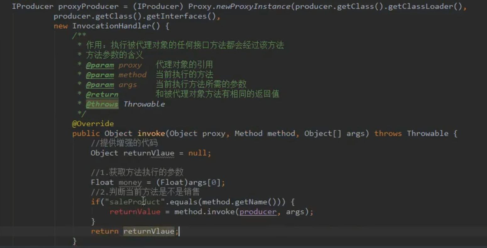
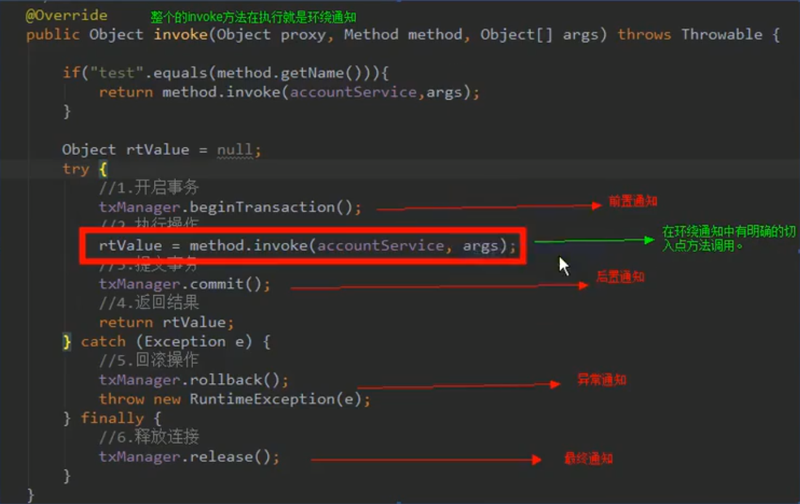
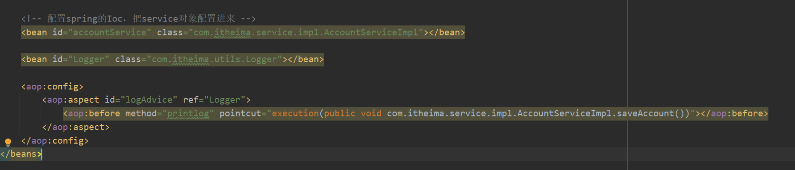
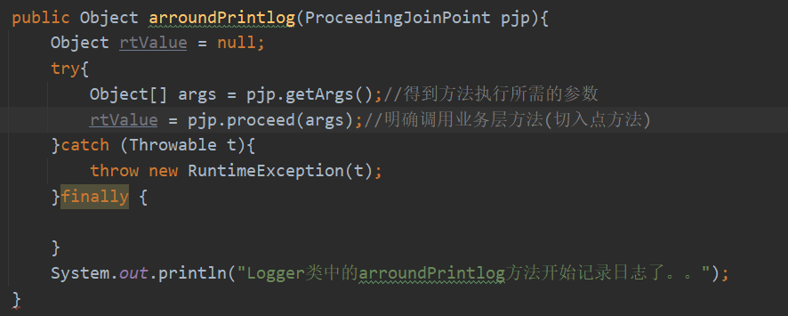

为了web大作业而学习的框架
Spring
ApplicationContext的三个常用实现类
- ClassPathXmLAppLicationlontext:它可以加载类路径下的配置文件，要求配置文件必须在类路径下。不在的话，加载不了。
- FiLeSystemXmLApplicationContext:它可以加载磁盘任意路径下的配置文件(必须有访问权限)
- AnnotationConfigApplicationContext:它是用于读取注解创建容器的。
BeanFactory和ApplicationContext的区别
ApplicationContext:
它在构建核心容器时，创建对象采取的策略是采用立即加载的方式。也就是说，只要一读取完配置文件马上就创建配置文件中配置的对象。
BeanFactory:
它在构建核心容器时，创建对象采取的策略是采用延迟加载的方式。也就是说，什么时候根据id获取对象了，什么时候才真正的创建对象。
Bean对象
创建bean的三种方式
使用默认构造函数创建
在spring的配置文件中使用bean标签，配以id和class属性之后，且没有其他属性和标签时。采用的就是默认构造函数创建bean对象，此时如果类中没有默认构造函数，则对象无法创建。
<bean id="instanceFactory(类名)" class = "com.itheima.factory.InstanceFactory(所在位置)"></bean>使用普通工厂中的方法
使用某个类中的方法创建对象，并存入spring容器
1
2<bean id="instanceFactory(类名)" class = "com.itheima.factory.InstanceFactory(所在位置)"></bean>
<bean id="accountService(方法名)" factory-bean="instanceFactory(id指向的工厂)" factory-method="getAccountService(工厂中的方法)"></bean>使用工厂中的静态方法创建对象
使用某个类中的静态方法创建对象，并存入spring容器
<bean id="instanceFactory(类名)" class = "com.itheima.factory.InstanceFactory(所在位置)" factory-method="getAccountService(工厂中的方法)"></bean>
bean对象的作用范围
bean标签的scope属性:
作用:用于指定bean的作用范围
取值:
singleton: 单例的(默认值)
prototype：多例的
request：作用于web应用的请求范围
session：作用于web应用的会话范围
global-session：作用于集群环境的会话范围（全局会话范围)，当不是集群环境时，它就是session
<bean id="instanceFactory(类名)" class = "com.itheima.factory.InstanceFactory(所在位置)" scope="singleton"></bean>
bean对象的生命周期
单例对象
出生：当容器创建时对象出生
活着：只要容器还在，对象一直活着
死亡：容器销毁，对象消亡
总结：单例对象的生命周期和容器相同
多例对象
出生:当我们使用对象时spring框架为我们创建
活着:对象只要是在使用过程中就一直活着
死亡:当对象长时间不用，且没有别的对象引用时，由Java的垃圾回收器回收
Spring中的依赖注入
依赖注入：
Dependence Injection
IOC的作用：
降低程序间的耦合(依赖关系)
依赖关系的管理：
以后都交给spring来维护
在当前类需要用到其他类的对象，由spring为我们提供，我们只需要在配置文件中说明依赖关系的维护:
就称之为依赖注入
依赖注入:
能注入的数据:有三类
基本类型和String
其他bean类型(在配置文件中或者注解配置过的bean)
复杂类型/集合类型
注入的方式:
第一种:使用构造函数提供
第二种:使用set方法提供
第三种:使用注解提供
如果是经常发生变化的数据，并不适用于注入
构造函数注入
使用的标签:constructor-arg
标签出现的位置:bean标签的内部
标签中的属性
type:用于指定要注入的数据的数据类型，该数据类型也是构造函数中某个或某些参数的类型
index:用于指定要注入的数据给构造函数中指定索引位置的参数赋值。索引的位置是从0开始
name:用于指定给构造函数中指定名称的参数赋值
===================以上三个用于指定给构造函数中哪个参数赋值======================
value:用于提供基本类型和String类型的数据
ref:用于指定其他的bean类型数据。它指的就是在spring的Ioc核心容器中出现过的bean对象
优势：
在获取bean对象时，注入数据是必须的操作，否则对象无法创建成功。
弊端:
改变了bean对象的实例化方式，使我们在创建对象时，如果用不到这些数据，也必须提供。
demo：
1 | <bean id="accountService" class="com. itheima.service.impl.AccountServiceImpl"> |
set方法注入
普通类型
使用的标签:property
标签出现的位置:bean标签的内部
标签中的属性
name:用于指定注入时所调用的set方法名称
value:用于提供基本类型和String类型的数据
ref:用于指定其他的bean类型数据。它指的就是在spring的Ioc核心容器中出现过的bean对象
优势:
创建对象时没有明确的限制，可以直接使用默认构造函数
弊端:
如果有某个成员必须有值，则set方法无法保证一定注入
demo:
1 | <bean id="accountService2" class="com.itheima.service.impl.AccountServiceImpl2"> |
复杂类型的注入/集合类型的注入
用于给List结构集合注入的标签:
list array set
用于个Map结构集合注入的标签:
map props
结构相同，标签可以互换
demo：
1 | <bean id="accountService3" class="com. itheima.service.impl.AccountServiceImpl3"> |
注解类型注入
在使用之前需要告知spring在创建容器时要扫描的包．配置所需要的标签不是在beans的约束中，而是一个名称为context名称空间和约束中
<context:component-scan base-package=”com.itheima”>
用于创建对象的
他们的作用就和在XML配置文件中编写一个
@Component:
作用：用于把当前类对象存入spring容器中。
属性：
value：用于指定bean的id。当我们不写时，它的默认值是当前类名，且首字母是改小写
@Controller:一般用在表现层
@Service:一般用在业务层
@Repository:一般用在持久层
以上三个注解的作用和Component是一摸一样的，他们三个是spring框架为我们提供明确的三层注解，使我们的三层对象更加清晰
用于注入数据的
他们的作用就和在xml配置文件中的bean标签中写一个
@Autowired：
作用:自动按照类型注入。只要容器中有唯一的一个bean对象类型和要注入的变量类型匹配，就可以注入成功
如果ioc容器中没有任何bean的类型和要注入的变量类型匹配，则报错
如果ioc容器中有多个类型匹配时:
先匹配类型，在匹配名称
出现位置：
可以是变量上，也可以是方法上
细节：
在使用注解注入时，set方法就不是必须的了
@Qualifier：
作用:在按照类中注入的基础之上再按照名称注入。它在给类成员注入时不能单独使用。但是在给方法参数注入时可以
属性：
value：用于指定注入bean的id
@Resource
作用:直接按照bean的id注入。它可以独立使用
属性:
name:用于指定bean的Id
以上三个注入都只能注入其他bean类型的数据，而基本类型和string类型无法使用上述注解实现。另外，集合类型的注入只能通过ML来实现。
@Value
作用:用于注入基本类型和String类型的数据
属性:
value:用于指定数据的值。它可以使用spring中SpEL(也就是spring的eL表达式)
SpEL的写法：${表达式}
用于改变作用范围的
他们的作用就和在bean标签中使用scope属性实现的功能是一样的
@Scope
作用:用于指定bean的作用范围
属性:
value:指定范围的取值。常用取值:singleton prototype
和生命周期相关
他们的作用就和在bean标签中使用init-method和destroy-method的作用是一样的
@PreDestroy
作用:用于指定销毁方法
@PostConstruct
作用:用于指定初始化方法
配置相关
@Configuration
作用:指定当前类是一个配置类
细节：当配置类作为AnnotationConfigApplicationContext对象创建的参数时，该注解可以不写。
@ComponentScan
作用:用于通过注解指定spring在创建容器时要扫描的包
属性：
value：它和basePackages的作用是一样的．都是用于指定创建容器时要扫描的包。
我们使用此注解就等同于在xmL中配置了:
<context:component-scan base-package=”com.itheima”>< /context:component-scan>
@Bean
作用：用于把当前方法的返回值作为bean对象存入spring的ioc容器中
属性：
name：用于指定bean的id。当不写时，默认值是当前方法的名称
细节：
当我们使用注解配置方法时，如果方法有参数，spring框架会去容器中查找有没有可用的bean对象。查找的方式和Autowired注解的作用是一样的
@Import
作用：用于导入其他的配置类
属性：
value：用于指定其他配置类的字节码。
当我们使用import的注解之后，有Import注解的类就是父配置类，而导入的都是子配置类
@PropertySource
作用：用于指定properties文件的位置
属性：
value：指定文件的名称和路径。
关键字：classpath，表示类路径下
@Qualifier
例子
1 | public QueryRunner createQueryRunner(@Qualifier("ds2") DataSource dataSource){ |
Junit单元测试Spring框架
Spring控合junit的配置
导入spring整合junit的jar(坐标)
使用Junit提供的一个注解把原有的main方法替换了，替换成spring提供的
@Runwith
告知spring的运行器，spring和ioc创建是基于xmL还是注解的，并且说明位置
@ContextConfiguration
Locations:指定xml文件的位置，加上classpath关键字,表示在类路径下
cLasses:指定注解类所在地位置
demo：
1 | (SpringJUnit4ClassRunner.class) |
Spring的面向切片编程
动态代理
特点:字节码随用随创建,随用随加载
作用:不修改源码的基础上对方法增强
分类:
基于接口的动态代理
基于子类的动态代理
基于接口的动态代理:
涉及的类:Proxy
提供者:JDK官方
如何创建代理对象:
使用Proxy类中的newProxyInstance方法
创建代理对象的要求:
被代理类最少实现一个接口，如果没有则不能使用
newProxyInstance方法的参数:
ClassLoader：类加载器
它是用于加载代理对象字节码的。和被代理对象使用相同的类加载器。固定写法。
class[]: 字节码数组
它是用于让代理对象和被代理对象有相同方法。固定写法
InvocationHandler:用于提供增强的代码
它是让我们写如何代理。我们一般都是些一个该接口的实现类，通常情况下都是匿名内部类，但不是必须
此接口的实现类都是谁用谁写。

但是，没有实现接口的类在没有第三方jar包的情况下无法动态代理
基于子类的动态代理
涉及的类:Enhancer
提供者:第三方cglib库
如何创建代理对象:
使用Enhancer类中的create方法
创建代理对象的要求:
被代理类不能是最终类
create方法的参数:
Class：字节码
它是用于指定被代理对象的字节码。
Callback:用于提供增强的代码
它是让我们写如何代理。我们一般都是些一个该接口的实现类，通常情况下都是匿名内部类，但不是必须的。
此接口的实现类都是谁用谁写。
我们一般写的都是该接口的子接口实现类:MethodInterceptor
AOP(面向切面编程)
Joinpoint(连接点):
所谓连接点是指那些被拦截到的点。在spring中,这些点指的是方法,因为spring只支持方法类型的连接点。
Pointcut(切入点):
所谓切入点是指我们要对哪些Joinpoint进行拦截的定义。
Advice(通知/增强):
所谓通知是指拦截到Joinpoint 之后所要做的事情就是通知。
通知的类型:前置通知,后置通知,异常通知,最终通知，环绕通知。
demo:

Introduction(引介):
引介是一种特殊的通知在不修改类代码的前提下，Introduction可以在运行期为类动态地添加一些方法或Field。
Target(目标对象):
代理的目标对象。
weaving(织入):
是指把增强应用到目标对象来创建新的代理对象的过程。
spring采用动态代理织入，而AspectJ采用编译期织入和类装载期织入。
Proxy（代理):
一个类被AoP织入增强后，就产生一个结果代理类。
Aspect(切面):
是切入点和通知（引介）的结合。
spring中基于XML的AOP配置步骤
把通知Bean也交给spring来管理
使用aop:config标签表明开始AOP的配置
使用aop:aspect标签表明配置切面
id属性:是给切面提供一个唯一标识
ref属性:是指定通知类bean的Id。
在aop:aspect标签的内部使用对应标签来配置通知的类型
我们现在示例是让printLog方法在切入点方法执行之前之前:所以是前置通知
aop:before:表示配置前置通知
method属性:用于指定Logger类中哪个方法是前置通知
pointcut属性:用于指定切入点表达式，该表达式的含义指的是对业务层中哪些方法增强
切入点表达式的写法:
关键字:execution(表达式)
表达式:
访间修饰符 返回值 包名.包名.包名…类名.方法名(参数列表)
标准的表达式写法:
public void com.itheima.service.impl.AccountServiceImpl.saveAccount()
demo:

访问修饰符可以省略
void com.itheima.service.impl.AccountServiceImpl.saveAccount()
返回值可以使用通配符，表示任意返回值
* com.itheima.service.impl.AccountServiceImpl.saveAccount()
包名可以使用通配符，表示任意包，但是有几级包，就需要写几个*
* *.*.*.*.AccountServiceImpl.saveAccount()
包名可以使用..来表示当前包及其子包
* *..AccountServiceImpl.saveAccount()
类名和方法名都可以使用*来实现通配
* *..*.*()
参数列表:
可以直接写数据类型：
基本类型直接写名称 int
引用类型写包名.类名的方式 java.lang.String
可以使用通配符，表示任意参数，但是必须有参数
可以使用..表示有无参数均可，有参数可以是任意类型
全通配写法：
* *..*.*(..)
实际开发中切入点表达式的通常写法：
切到业务层实现类下的所有方法
* com.itheima.service.impl.*.*(..)
环绕通知应该加入切入点，demo如下：
